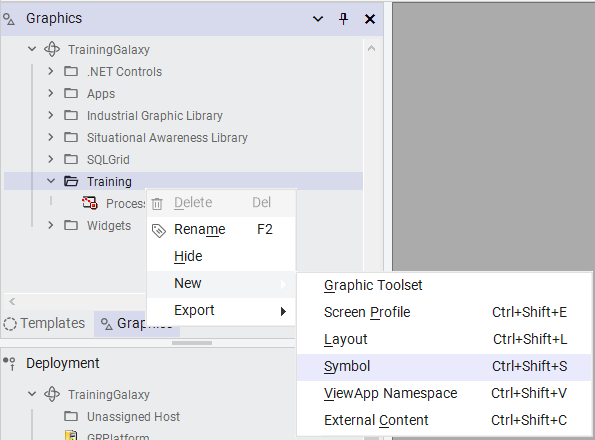
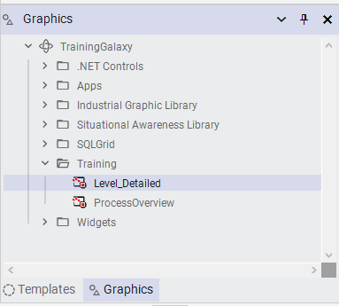

Source: AVEVA InTouch for System Platform 2023 Training Manual, Module 3 (pages 149–172)
In this lab you will create graphics for each piece of mixing equipment — level meters, temperature meters, valves, agitators, and pumps — using Situational Awareness symbols with relative references. You will then link these symbols to their template objects and test them in runtime.
Lab Objectives: Upon completion, you will be able to link symbols to template objects, duplicate symbols, search for graphics in the Toolbox, configure graphics with relative references (Me.), and use Substitute References to modify embedded references.
14.1 Create the Level Graphic
Reference: Module 3, Lab 6 (pages 148–151)
First, you will create a Level_Detailed symbol and embed the SA_Meters graphic, configuring it to display mixer level.
Steps 1–6: Create and Place the Level Meter
In the IDE, on the Graphics tab, right-click the Training toolset and select New → Symbol.
Name the new symbol Level_Detailed.
Double-click Level_Detailed to open it for editing.
On the right side of the Graphic Editor, select the Toolbox tab, and in the Search field, enter meters.
In the preview area, select SA_Meters.
Drag SA_Meters to the canvas.

Creating a new symbol in the Training toolset (page 148)

Level_Detailed symbol now appears alongside ProcessOverview in the Training toolset (page 148)
Searching for "meters" in the Toolbox reveals the SA_Meters component (page 149)
Selecting SA_Meters from the Meters toolset in the SA Library (page 149)
SA_Meters placed on the canvas with placeholder label and value fields (page 150)
SA_Meters element selected and ready for configuration (page 150)
Steps 7–9: Configure the Level Meter
Select the Properties tab, and in Name, enter LevelMeter.
In Wizard Options, configure: Type = Level, LabelType = ObjectTagname, EngUnitsType = CustomPropertyLabel.
Click Save and Close and check in the graphic.
Tip: As you modify the Wizard Options, observe the changes on the canvas — the graphic updates in real time based on the properties you select.
Configuring LevelMeter properties with Type set to Level (page 151)
Complete Wizard Options configuration for the Level meter (page 151)
14.2 Create the Temperature Symbol
Reference: Module 3, Lab 6 (pages 152–153)
Rather than creating the temperature meter from scratch, you will duplicate the Level_Detailed symbol and reconfigure it. This demonstrates the efficiency of the duplicate-and-modify workflow.
Steps 10–16: Duplicate and Reconfigure
In the IDE, on the Graphics tab, right-click Level_Detailed and select Duplicate.
Name the duplicate Temperature_Detailed.
Double-click Temperature_Detailed to edit it.
Select the LevelMeter symbol on the canvas.
On the Properties tab, rename it to TemperatureMeter.
In Wizard Options, change the Type to Temperature. The graphic updates on the canvas.
Save and close and check in the graphic.
The Training toolset now contains Level_Detailed, ProcessOverview, and Temperature_Detailed (page 152)
Temperature_Detailed showing the meter configured for temperature display (page 152)
14.3 Create the Valve Symbol
Reference: Module 3, Lab 6 (pages 153–155)
Now you will create a Valve_Detailed symbol to represent the mixer valves, using the SA_Valve_And_Damper graphic from the Situational Awareness Library.
Steps 17–23: Create and Configure Valve
On the Graphics tab, right-click the Training toolset and select New → Symbol.
Name the symbol Valve_Detailed and open it for editing.
Searching for "valve_a" reveals the SA_Valve_And_Damper component (page 153)
SA_Valve_And_Damper placed on the canvas, ready for configuration (page 153)
The valve graphic with green actuator section visible (page 154)
Valve Wizard Options configured for open/close command type with dual limit switches (page 154)
Steps 24–27: Configure Valve Custom Properties
Right-click Valve and select Custom Properties.
Configure custom properties as follows:
Property
Value
CmdClose
not Me.Cmd
CmdOpen
Me.Cmd
Key Concept: Using relative references like Me.Cmd allows this graphic to be added once to the template object and reused across all derived instances. At runtime, Me resolves to the actual instance name. The not keyword inverts the Boolean value to support both valve states (open and closed).
Valve custom properties using relative references for open/close commands (page 155)
14.4 Create the Agitator Symbol
Reference: Module 3, Lab 6 (pages 155–159)
The agitator symbol requires additional configuration because its SA_Agitator_Settler graphic uses default references (Me.PV, Me.SP) that need to be remapped to the actual speed attributes (Me.Speed.PV, Me.Speed.SP).
Steps 28–32: Create and Configure Agitator
On the Graphics tab, right-click the Training toolset and select New → Symbol.
Rename the symbol Agitator_Detailed and open it for editing.
On the Toolbox tab, search for agitator.
Drag SA_Agitator_Settler to the canvas.
Name the graphic Agitator and configure Wizard Options: LabelType = ObjectTagname, PVNumericDisplay = True, EngUnits = True, EngUnitsType = CustomPropertyLabel, SymbolMode = Advanced, EquipmentStatusIndicator = True, SetPoint = True.
SA_Agitator_Settler placed on the canvas after searching for "agitator" (page 156)
Agitator Wizard Options configured for numeric display and equipment status indicator (page 156)
Steps 33–39: Substitute References
The default references in the agitator graphic need to be remapped. You will use Substitute References to change Me.SP to Me.Speed.SP and Me.PV to Me.Speed.PV.
Right-click Agitator and select Substitute → Substitute References.
In the New column, rename Me.SP to Me.Speed.SP.
Click Find & Replace to expand the options.
In Find What, enter Me.PV.
In Replace with, enter Me.Speed.PV.
Click Replace All. The status bar indicates 4 strings replaced.
Click OK to close Substitute Reference.
Accessing Substitute References from the context menu (page 157)
Renaming Me.SP to Me.Speed.SP in the Substitute Reference dialog (page 157)
The Find & Replace dialog for bulk reference substitution (page 157)
Finding all Me.PV references to replace with Me.Speed.PV (page 158)
All references successfully remapped — 4 of 5 strings replaced (page 158)
Steps 40–43: Configure Agitator Custom Properties
Right-click the Agitator and select Custom Properties.
Configure custom properties as follows:
Property
Value
EquipState
Me.PV
EquipStateActive
Me.PV
EquipStatePassive
not Me.PV
Agitator custom properties for equipment state display using relative references (page 159)
14.5 Create the Pump Symbol
Reference: Module 3, Lab 6 (pages 159–160)
Finally, you will create the Pump_Detailed symbol using the SA_Pump_Blower_RotaryValve graphic.
Steps 44–49: Create and Configure Pump
On the Graphics tab, right-click the Training toolset and select New → Symbol.
Name the symbol Pump_Detailed and open it for editing.
On the Toolbox tab, search for sa_pump, then drag SA_Pump_Blower_RotaryValve to the canvas.
Name the graphic Pump, set Wizard Option LabelType = ObjectTagname.
Set Custom Property: EquipState = Me.PV.
Save and close and check in the graphic.
Searching for "sa_pump" and selecting the pump component (page 160)
The pump graphic placed on the canvas with selection handles (page 160)
Pump Wizard Options configured for fixed motor type with object tagname label (page 160)
Pump custom properties using relative reference for equipment state (page 161)
14.6 Associate Symbols with Templates
Reference: Module 3, Lab 6 (pages 161–165)
Now you will link each symbol you created to its corresponding template object using the Link Content feature in the Object Editor.
Steps 50–55: Link Agitator_Detailed to $Agitator
On the Templates tab, in the Training\Project toolset, double-click $Agitator to edit it. The Object Editor appears.
On the Attributes tab, click the Configure Wizard Options button to hide the Object Wizard. The tab expands to show Attributes and Content.
In the Content pane, click the Link Content button.
In the Galaxy Browser, select the Training toolset and then select Agitator_Detailed.
Click OK. Agitator_Detailed appears in the Content pane.
Save and close the $Agitator object.
The Templates pane showing the Project toolset with all equipment templates (page 161)
The $Agitator Object Editor with the Content pane ready for linking (page 162)
The $Agitator attributes tab showing inherited motor command and process variable attributes (page 162)
Object information showing inherited $Motor attributes for the agitator (page 162)
The Galaxy Browser showing all six symbols available for linking (page 163)
Agitator_Detailed successfully linked to $Agitator as content (page 163)
Important: When you check in the template object, a warning appears indicating that changes will propagate to all derived objects. In a real-world environment, you should cancel the check-in and notify other developers before proceeding. For this lab, we proceed since only one developer is working.
The check-in warning about changes propagating to derived objects (page 164)
Steps 57–61: Link Remaining Symbols
On the Templates tab, double-click $Level to edit it.
In Content, click Link Content.
In the Galaxy Browser, double-click Level_Detailed to link it.
Save, close, and check in $Level.
Now link the remaining symbols to their templates:
Template
Symbol
$Pump
Pump_Detailed
$Temperature
Temperature_Detailed
$Valve
Valve_Detailed
The $Pump, $Temperature, and $Valve templates with their linked symbols (page 165)
14.7 Test in Runtime
Reference: Module 3, Lab 6 (pages 166–169)
Finally, you will test the functionality of the level meter symbol in runtime by embedding an instance version in WindowMaker.
Steps 62–66: Embed Instance Graphic
Switch to WindowMaker.
In the ContentDisplay window, right-click and select Embed Industrial Graphic.
The Galaxy Browser opens showing the template versions — these use Me. references and will not work at runtime. You need to select an instance version instead.
In the Galaxy Browser, click the Instances button to change the view.
Scroll down and select Level_001.
On the right, double-click Level_Detailed. The instance graphic is embedded.
Accessing Embed Industrial Graphic from the ContentDisplay context menu (page 166)
The Galaxy Browser showing Training symbols — these are template versions that won't work at runtime (page 166)
Switching to Instances view and selecting Level_001 for a working runtime graphic (page 167)
The Level_001 instance graphic embedded in ContentDisplay with live data visible (page 167)
Steps 67–75: Runtime Verification and Zoom
Click Runtime.
Verify the graphic displays live data. The lowercase "l" below the value indicates liters.
Click the ContentDisplay window to set focus.
Hold Ctrl and scroll the mouse wheel to zoom in and out. The zoom control bar appears at the bottom.
In the zoom control bar, select 300 from the drop-down list.
Click the Pan button. Pan mode is enabled.
Click and drag to pan the graphic left, right, up, and down.
Click the Normal button to restore 100% view and hide the zoom bar.
Click Development! to return to WindowMaker.
Note: You can make the zoom and pan control bar always visible at runtime by setting the Show zoom control property to Visible in WindowMaker.
The level gauge zoomed to 225% showing live data and the zoom control bar (page 168)
The zoom control bar with pan mode enabled at 300% zoom level (page 168)
The zoom control toolbar with pan tool active (page 169)
Pan mode active — click and drag to navigate the zoomed view (page 169)
The Level_001 meter displaying live process data in runtime (page 169)
The Graphic Editor tools palette available for custom graphic creation (page 169)
<End of Lab>
14.8 Introduction to Graphic Editor Tools
Reference: Module 3, Section 4 (pages 171–172)
The Graphic Editor provides a comprehensive set of tools for drawing and configuring graphic elements on the canvas. These tools are organized in the Tools pane and include options for drawing basic shapes, creating complex paths, adding text, and embedding images.
The Tools pane includes tools for drawing basic objects such as lines, rectangles, polygons, and arcs; a pointer tool for selecting and moving elements; Windows common controls like combo boxes and radio button groups; and a Status tool for showing quality and status of selected attributes.
The Graphic Editor tools palette with drawing, shape, and control tools (page 171)
Rectangle, Rounded Rectangle, Ellipses, and Line Tools — Draw basic geometric shapes on the canvas.
Polyline, Polygon, Curve, and Closed Curve Tools — Draw complex paths. Closed elements automatically close when finished.
2-Point and 3-Point Arc, Pie, and Chord Tools — Create arc segments and pie shapes for curved geometry.
Text Tools — Place text (no border, no wrap) or text boxes (with border, fill, and optional word wrap) on the canvas.
The complete Graphic Editor tools palette (page 172)
Knowledge Check
1. Why do you use the Instances view rather than the Templates view in the Galaxy Browser when embedding a graphic for runtime testing?
Click to reveal answer
Template versions use Me. relative references that are only resolved when displayed through their parent object. Instance versions have these references replaced with actual I/O links to specific objects, so they display live data at runtime.
2. In the Substitute References step for the agitator, why was Me.PV replaced with Me.Speed.PV rather than Me.PV?
Click to reveal answer
The agitator's process variable is specifically the speed attribute (Speed.PV), not the top-level PV. The default SA_Agitator_Settler graphic uses Me.PV, but the $Agitator object stores its speed data in Me.Speed.PV, so the references must be remapped.
3. What does the "not" keyword do in the custom property CmdClose: not Me.Cmd for the valve?
Click to reveal answer
The "not" keyword inverts the Boolean value of Me.Cmd. Since Me.Cmd is true when the valve is open, not Me.Cmd is true when the valve is closed, allowing the graphic to correctly display both open and closed states.
4. Why is the Duplicate workflow used for the Temperature_Detailed symbol instead of creating it from scratch?
Click to reveal answer
Duplicating Level_Detailed preserves all the Wizard Options, canvas size, positioning, and embedded SA_Meters configuration. Only the name and Type property need to change, making it much faster than recreating everything from scratch.
5. What happens when you check in a template object that has linked content, and there are derived objects?
Click to reveal answer
A warning appears indicating that changes will propagate to all derived objects. In a multi-developer environment, you should cancel the check-in, notify affected developers, and ensure their changes are checked in first before proceeding.
Module 3 — Symbols. AVEVA InTouch for System Platform 2023 Training.
Next: Lesson 15 — Graphic Editor Tools and Animations